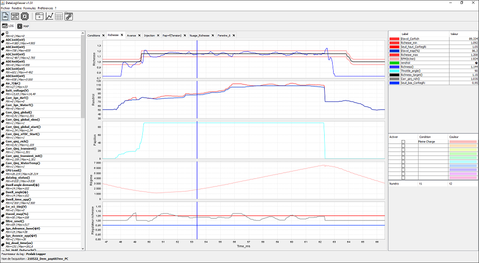

Présentation générale

DataLogViewer est une application de post-traitement des logs de contrôle moteur.
Actuellement les logs de PcsLab et Megasquirt sont
pris en charge.
Voici un résumé des fonctionnalités principales :
- Tracé des grandeurs mesurées sous différentes formes : temporel, nuage de point Y = f(X) ou Z = f(X,Y)
- Création de formules personnelles à partir des grandeurs disponibles dans le log
- Possibilité de mettre en évidence des zones sur les graphiques via des conditions
- Spécificités pour les utilisateurs de PcsLab :
- Gestion complète des fichiers *.map (ouverture, modification et sauvegarde)
- Création de formules avec des paramètres de calibration
- Association d'un workspace avec une calibration afin de visualiser les points du log dans les paramètres de calibration